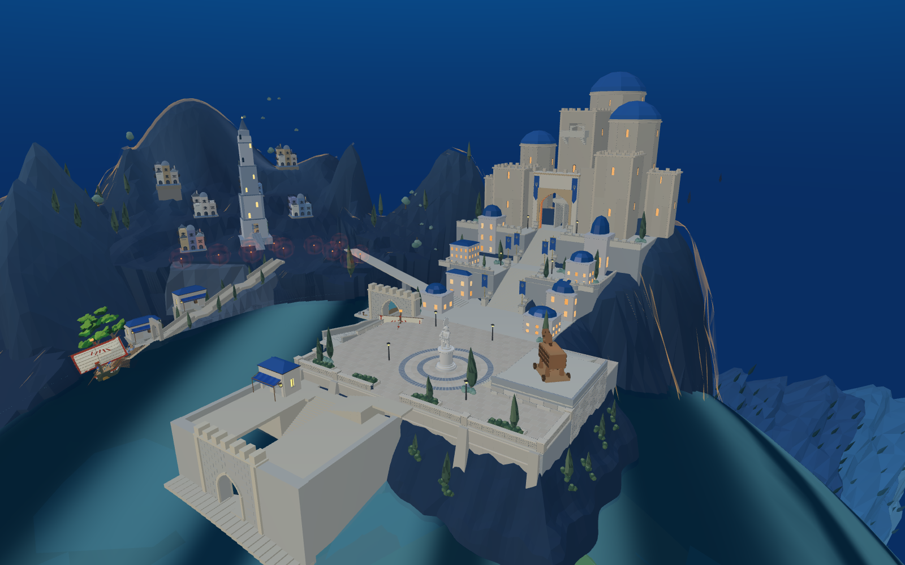
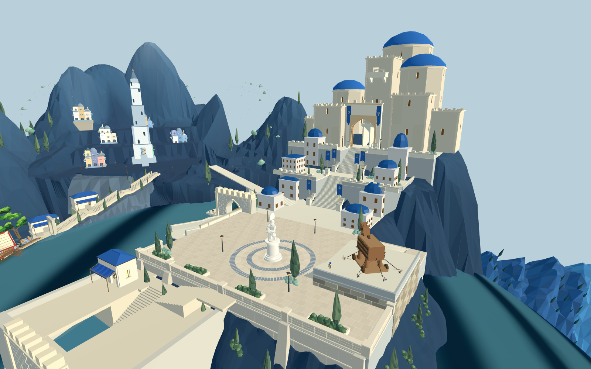

修改前

修改后
本轮候选调整七座外围塔体，保留中央旋梯、22.3米入口与37米上层出口。左右外塔逐级降低，三座蓝顶塔加宽，穹顶降低起拱比例。WFC负责七组前立面模块；建筑体量为依参考设计的参数布局，不能称为完整Townscaper体积求解。
8931原游戏加载本轮候选 · 体量数据 · 窗洞验证



原短剑兵559段路线通过：广场→城门→庭院→旋梯→顶层；不含登船和战斗。两端材质与昼夜尚待布光阶段协调。
主堡与山体的结合仍生硬，墙面细节和总体构图尚未达到目标；前港方块、广场比例及漂浮植被仍待对应轮次处理。默认8931和普通Godot场景尚未切换，本页链接会显式加载候选。